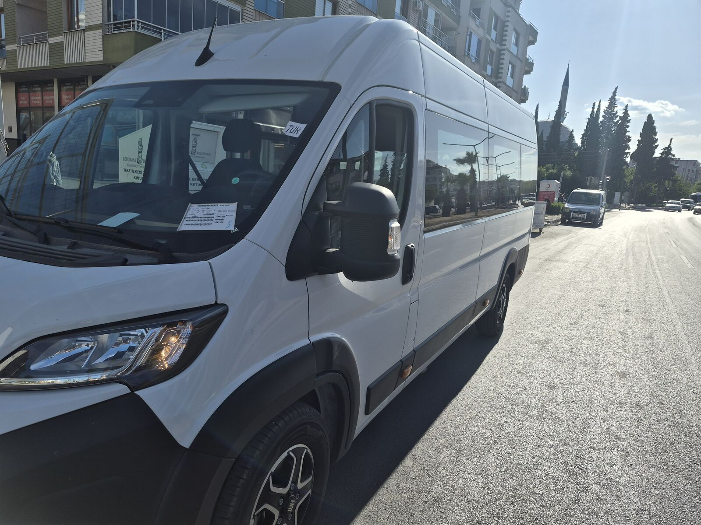
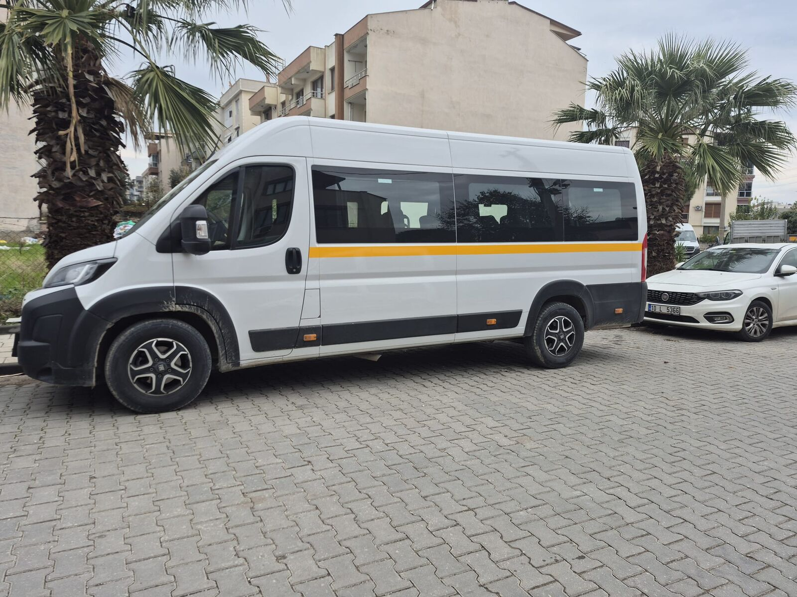
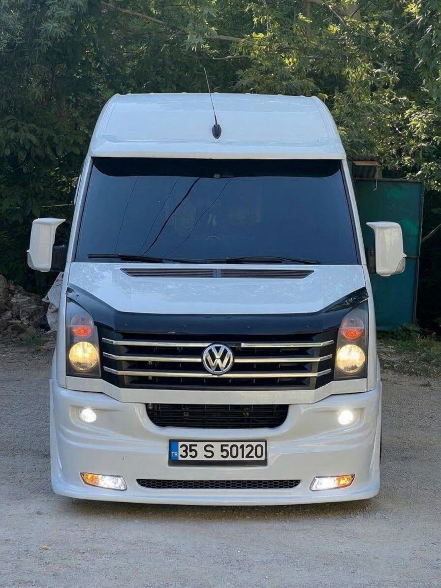
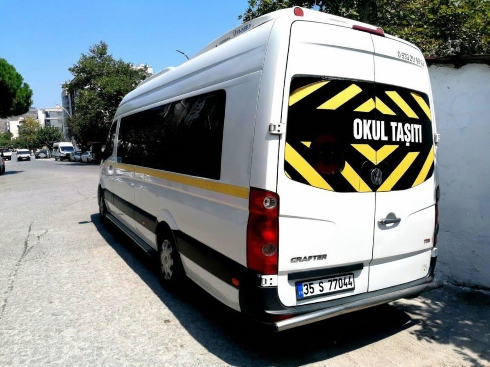
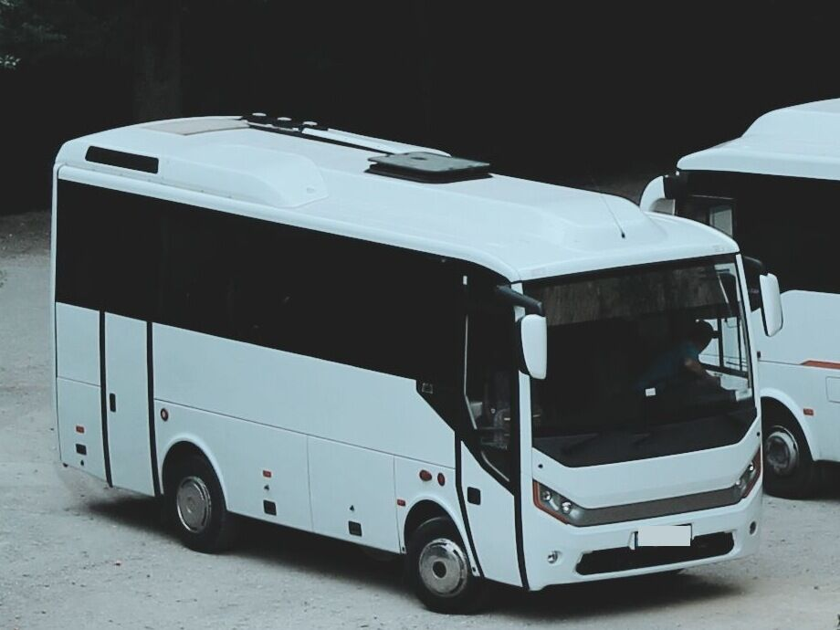
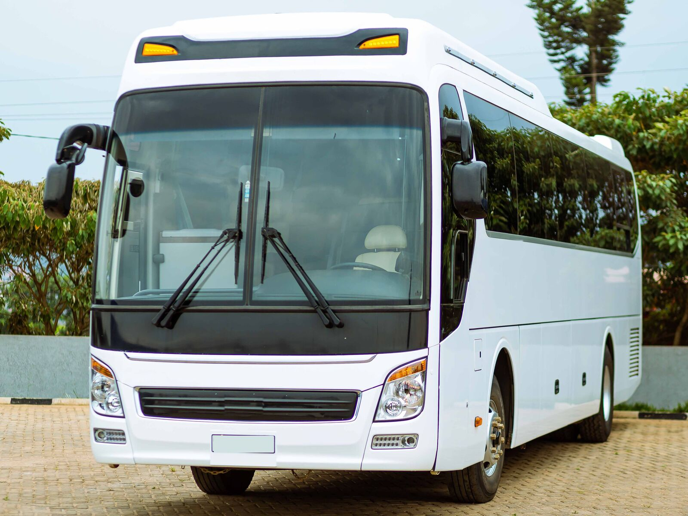

Araçlarımız
Uslu Turizm filosunda 16, 19, 21, 27 ve 54 kişilik araçlar var. Kişi sayınızı yazın, ihtiyacınıza uygun aracı önerelim.
- 16kişilik
- 19kişilik
- 21kişilik
- 27kişilik
- 54kişilik
5 kişilik ticari taksi için: Bergama Uslu Taksi
Dışarıdan
Fotoğraflardaki Volkswagen ve Fiat araçlarımız 16, 19 ve 21 kişilik.






27 ve 54 kişilik

